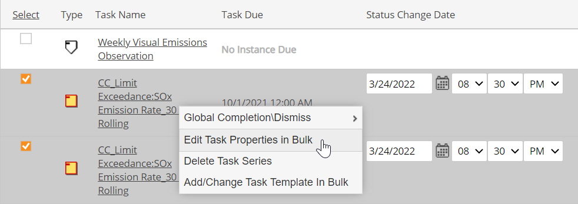

Task properties can be edited for two or more tasks at once using the bulk edit menu options.
When editing tasks in bulk, you can:
Edit General Task Attributes for Multiple Tasks
Add/Remove Associated Objects for Multiple Tasks
Change Task Assignee/Assignor for Multiple Tasks
Change Task Recurrence Schedule for Multiple Tasks
Add Task Notifications for Multiple Tasks
To access bulk edit options for tasks:
Right click and choose Edit Task Properties in Bulk.
